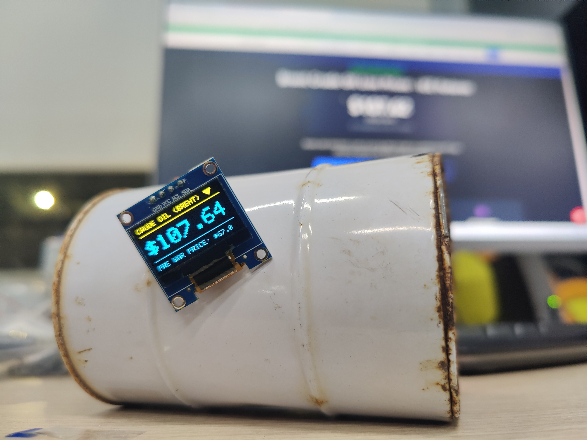
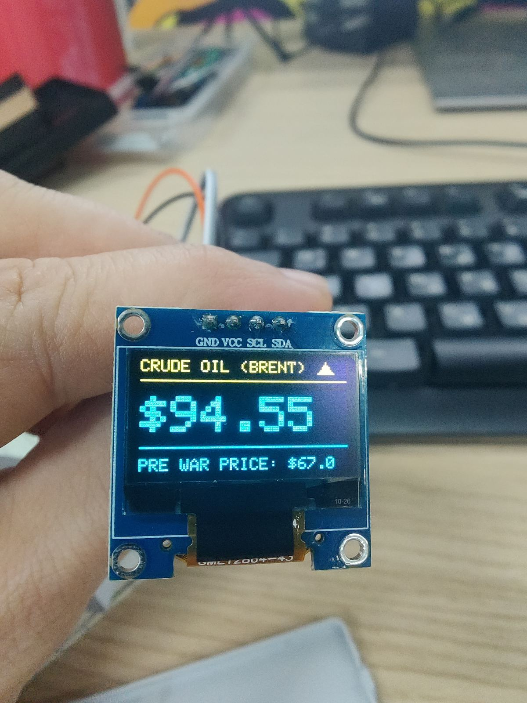

04. Brent Crude Oil Live Tracker | ESP32-C3 Supermini
Project IoT που συνδέεται σε WiFi, καλεί API σε πραγματικό χρόνο και εμφανίζει στην OLED την τρέχουσα τιμή πετρελαίου Brent μαζί με ένδειξη τάσης.
Περιγραφή
Η συσκευή λειτουργεί ως μικρό πληροφοριακό terminal. Ανακτά δεδομένα αγοράς, τα αναλύει με JSON και τα παρουσιάζει σε compact interface 128x64.
Ολοκλήρωση της κατασκευής στον Σύλλογο Τεχνολογίας Θράκης
Ομάδα Κατασκευής: Γιάννης Γ., Άρης Τ.
Α. Λειτουργίες λογισμικού
- WiFi σύνδεση και κλήση API χωρίς API key
- Parsing JSON δεδομένων με ευέλικτη δομή
- Απεικόνιση τιμής Brent και κατεύθυνσης μεταβολής
- Υποδομή έτοιμη για εναλλαγή ή επέκταση APIs
Β. Βιβλιοθήκες
- HTTPClient
- ArduinoJSON
- Adafruit GFX
- Adafruit SSD1306
Γ. Υλικά
- ESP32-C3 Supermini
- OLED I2C 128x64
- 4x Dupont F2F καλώδια
- USB τροφοδοσία (ή μπαταρία με κατάλληλο regulator)
Δ. Συνδεσμολογία OLED
- VCC → 3.3V
- GND → GND
- SDA → GPIO 8
- SCL → GPIO 9
Παρουσίαση
Video λειτουργίας στο YouTube: Brent Crude Oil Live Tracker Demo
Φωτογραφίες

